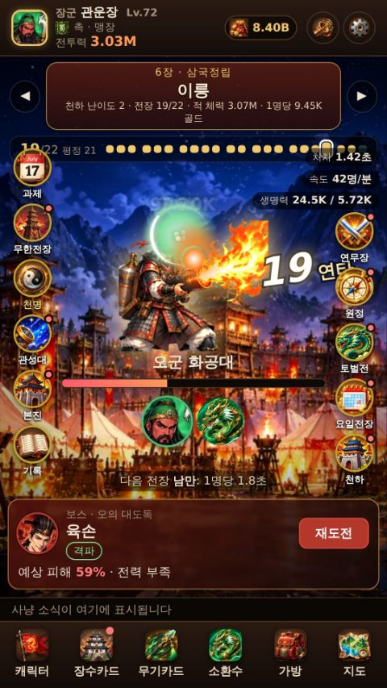
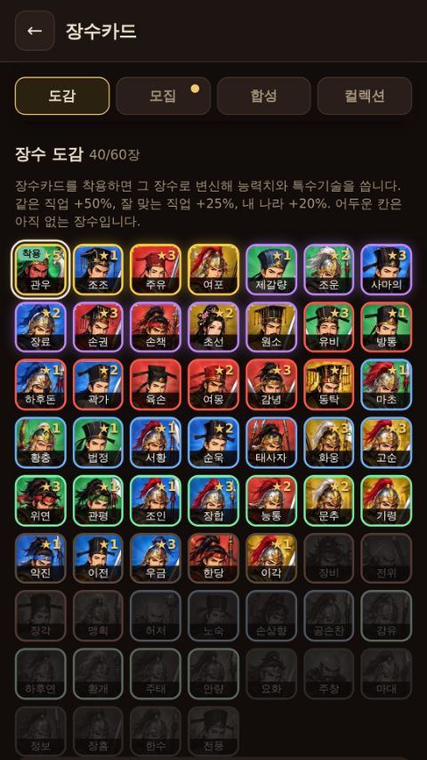
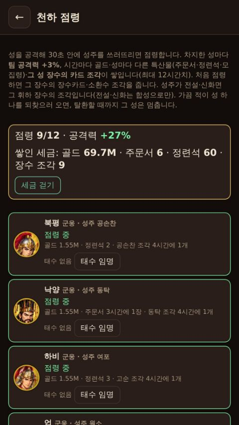
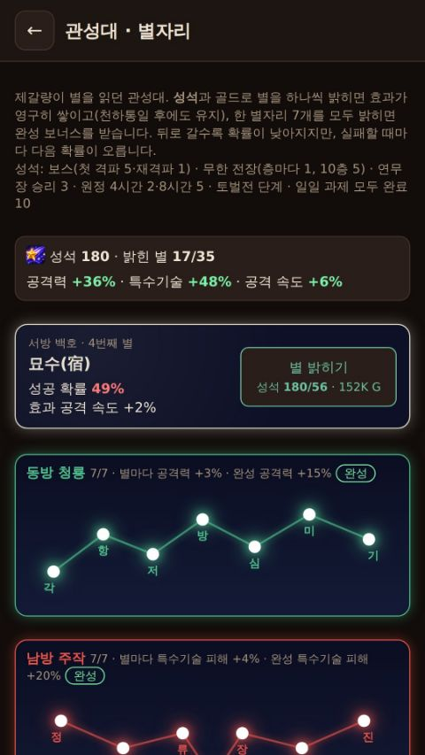

제1장
황건적의 난
탁현 들판 · 청주성 · 광종
삼국지 방치형 RPG
나만의 장수를 만들어 황건적의 난부터 오장원의 마지막 결전까지 22개 전장을 평정하세요. 앱을 꺼 두어도 싸움은 계속됩니다.
한국어 · English · 简体中文 · 日本語 · 개발 · 휴아트
7장 · 22개 전장
삼국지 이야기 순서대로 전장이 열립니다. 전장마다 그 시대의 장수가 보스로 기다립니다.
탁현 들판 · 청주성 · 광종

사수관 · 호로관 · 낙양

계교 · 완성 · 하비성 · 수춘

백마 · 관도

신야 · 장판파 · 적벽

동관 · 정군산 · 번성 · 이릉

남만 · 가정 · 오장원
무료 체험은 제2장 낙양(동탁)까지, 정식판은 22개 전장 모두 즐길 수 있습니다.
게임 특징

이름과 직업(맹장·궁수·책사), 나라(위·촉·오·군웅)를 골라 캐릭터를 만듭니다. 레벨이 오를 때마다 능력치를 직접 나눕니다.

관우·조조·주유·여포… 장수카드를 착용하면 그 장수의 능력치와 특수기술로 싸웁니다. 전용 소환수와 무기카드까지 모으면 혼연일체.

앱을 닫은 동안에도 사냥은 이어지고, 돌아오면 그동안 모은 골드와 장비를 한 번에 받습니다.

성 12곳을 공성하는 천하 점령, 주마다 바뀌는 토벌전, 연무장 상성 대결과 천하 명장록 순위.

본진 건설, 전설의 보패 8종, 백성에서 승상까지 관직 승진, 관성대의 별자리, 그리고 천하통일로 이어지는 회차.

보스의 큰 공격을 제때 막으면 반격. 화면을 지나가는 황금 수레를 잡으면 보너스를 얻습니다.
스크린샷




제2장(낙양 동탁)까지 무료로 즐기고, 정식판을 한 번 구매하면 모든 전장과 콘텐츠가 열립니다. 진행은 그대로 이어집니다.
입력 필요 · 휴아트